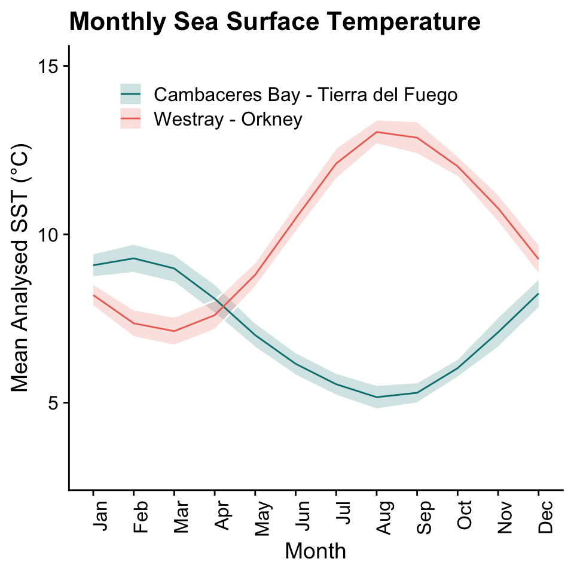
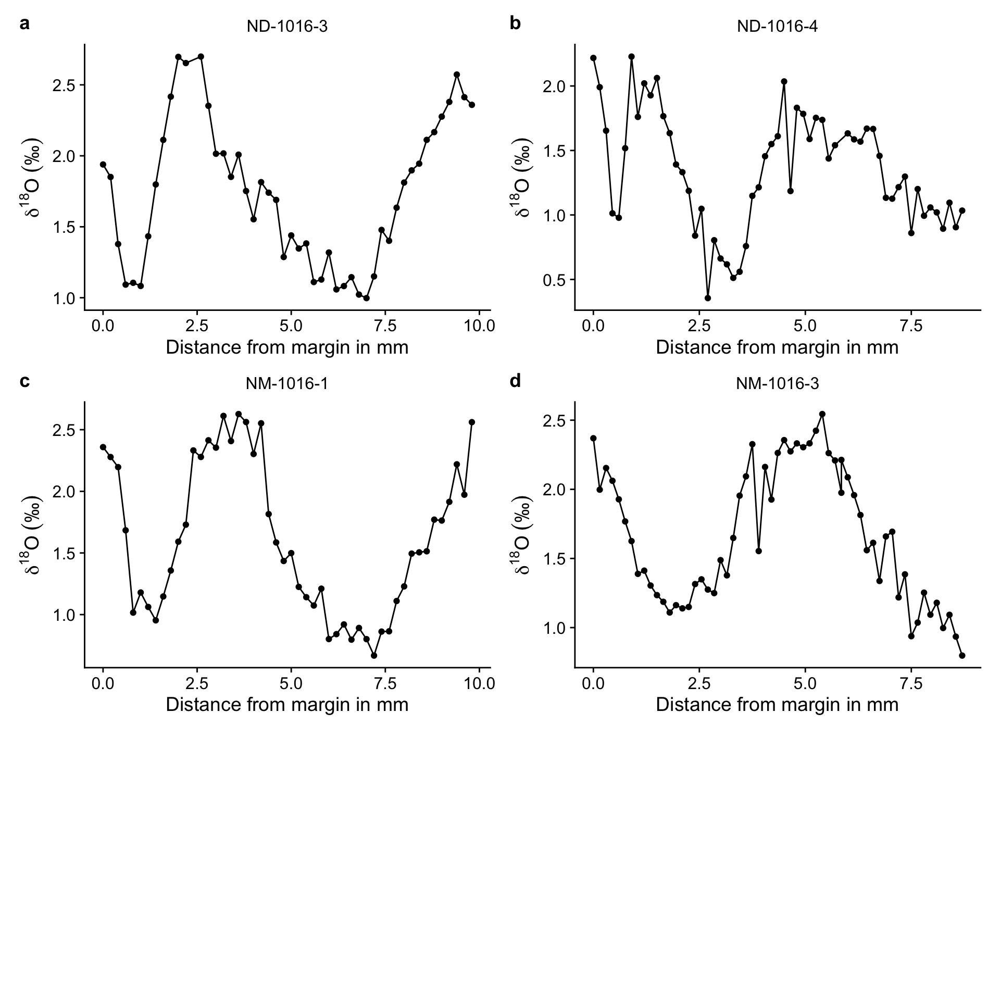
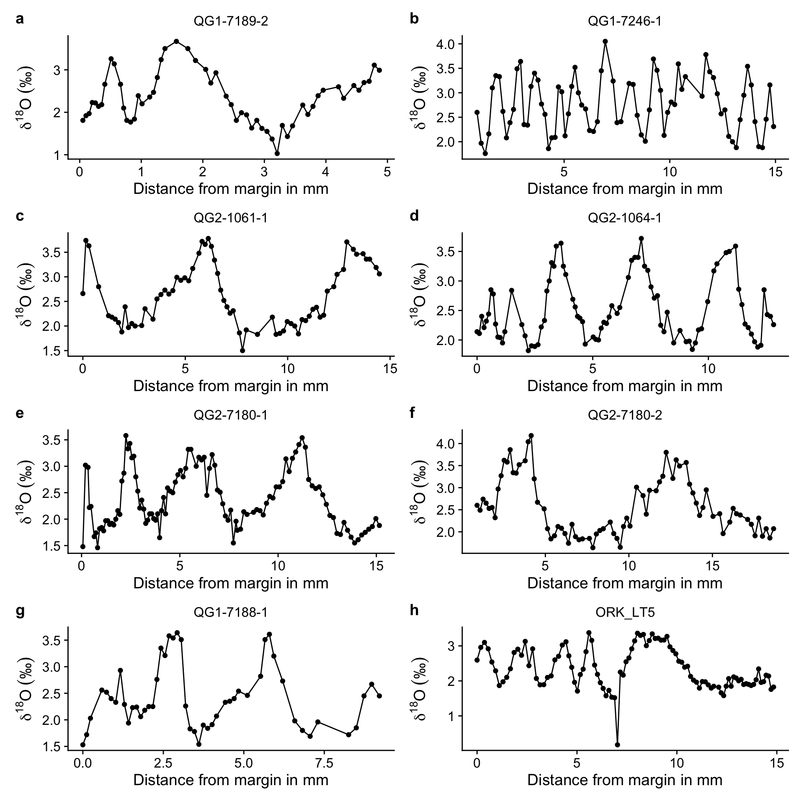
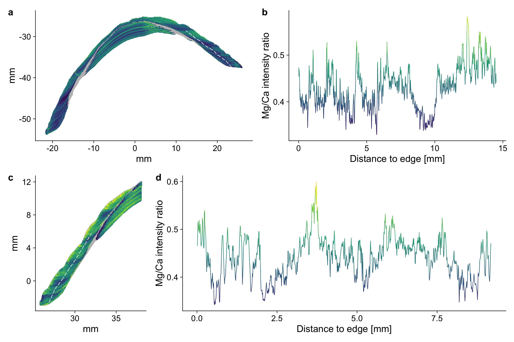
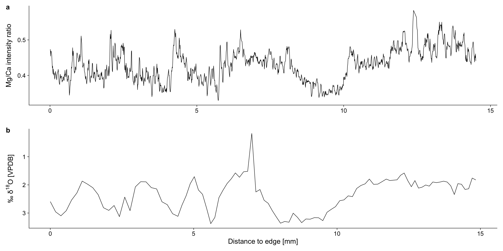
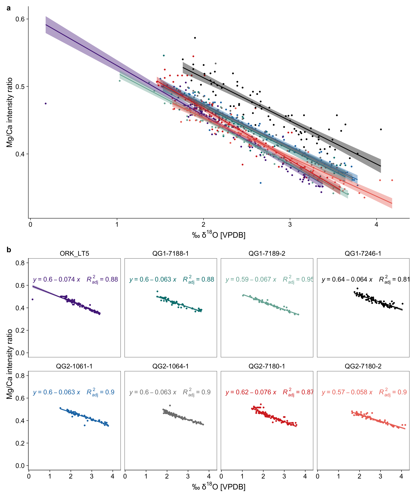
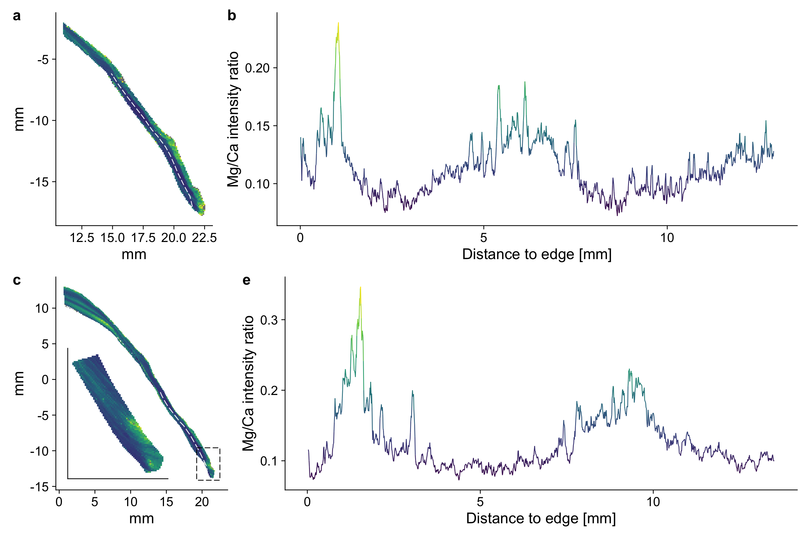
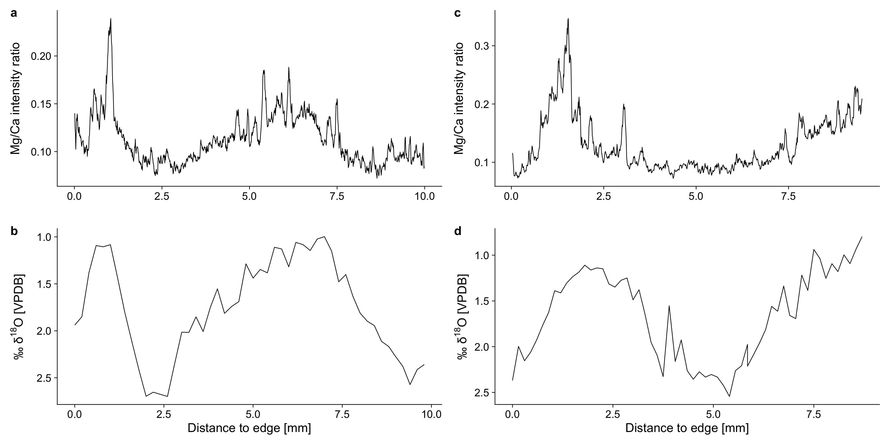
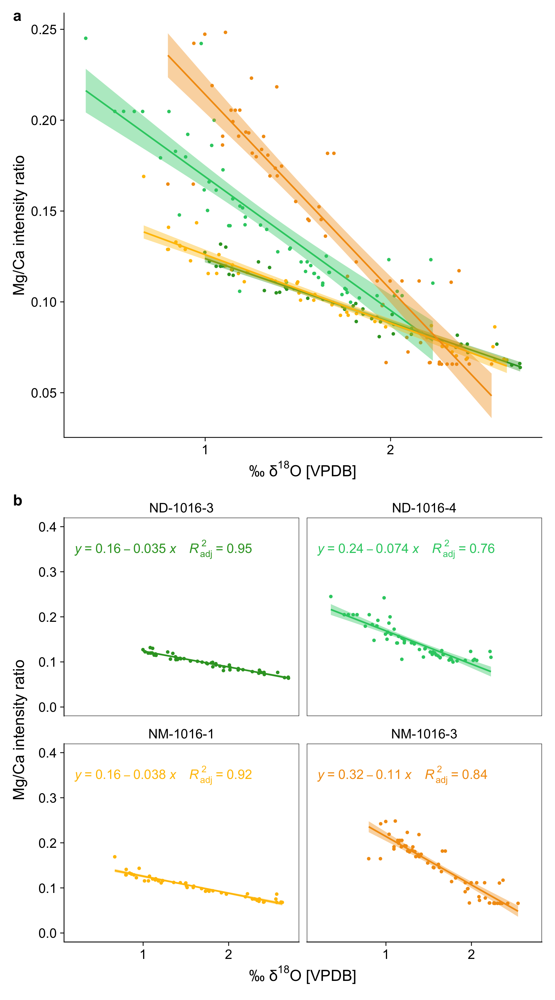
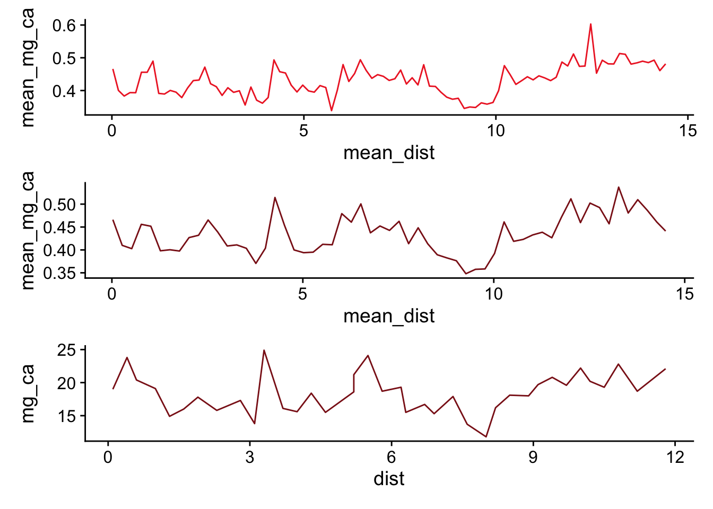

![]()

Interspecies comparisons of Mg/Ca ratios in limpet shells
Abstract
This study provides a short reassessment of the use of Magnesium to Calcium (Mg/Ca) ratios in Atlantic limpet shells to determine past sea surface temperatures. While Patella vulgata along the Spanish shoreline has since then repeatedly produced reliable correlations between sea surface temperature and Mg/Ca ratios, this is not the case for other patelloid species. Patella vulgata and Nacella deaureata have been studied using Mg/Ca with mixed or contrary results. In this study, we present elemental maps of various such species together with stable oxygen isotope values for some of the specimens. Our dataset also includes specimens that were previously unsuccessful in providing significant correlations between δ18O and Mg/Ca ratios. By reassessing these previous specimens and including a wider range of modern and archaeological samples from three patelloid species (P. vulgata, N. deaureata, and N. magellanica) we further add to the growing set of evidence for the reliable use of Mg/Ca ratios to detect palaeotemperature change and serve as a means to determine ontogenetic age and season of capture as well as to reveal locations of interest within the growth record (i.e. annual temperature minima and maxima) for the targeted analysis using δ18O or clumped oxygen isotope analysis.
Keywords
Sclerochronology, Limpets, Elemental Ratio, Mg/Ca
Introduction
Limpet shells are commonly found within archaeological sites and and past shorelines due to their robust carbonate structure and the long-term use of limpets as a marine food source. They have successfully been studied in the past in the context of coastal subsistence economies, site occupation on seasonal (Shackleton 1973; Parker et al. 2018; Bosch et al. 2018) or long-term scale (Ortiz et al. 2015), as well as palaeotemperature (Fenger et al. 2007; Surge and Barrett 2012; Wang, Surge, and Mithen 2012; Colonese et al. 2012; Ferguson et al. 2011). Determining past sea surface temperature (SST) change largely relies on the measurement of δ18O-values within the calcitic parts of the shell, but attempts have been made to also use elemental ratios, such as magnesium to calcium (Mg/Ca), to have an alternative measure, that potentially provides a more accurate SST estimate than δ18O-values, which are also affected by changes in salinity. In addition, the data acquisition of elemental ratios — either through laser-ablation-isotope-ratio-mass-spectrometry (LA-ICP-MS) or laser induced breakdown spectroscopy (LIBS), can be much faster and cost-effective, increasing the number of specimens that can be studied overall (Durham et al. 2017; Niklas Hausmann et al. 2023).
Problematically, links between Mg/Ca ratios and SST changes in many marine mollusc shells, including limpets, have shown to be unreliable (Surge and Lohmann 2008; Wanamaker et al. 2008; Schöne et al. 2010; Freitas et al. 2012; L. Graniero, Surge, and Gillikin 2015; Poulain et al. 2015; Vihtakari et al. 2017). This is particularly the case where there is little available additional information on metabolic processes, organic components of the shell matrix, intra-increment and intra-shell variability, and growth rates, which can independently and unpredictably affect Mg/Ca ratios and confound their interpretation as temperature proxy. Confusingly, multiple different temperature equations have been found for the same species (see (Freitas et al. 2012; Vihtakari et al. 2017) and references therein). Coeval specimens sharing one locality can also show differences in their relation to SST (N. Hausmann et al. 2019). Where the use of Mg/Ca as a palaeotemperature proxy was successful, anomalous patterns in some specimens had still to be filtered out by hand, reducing the overall robustness of the results of those successful studies (Ferguson et al. 2011).
While recent research particularly of Patella sp. in the Mediterranean and Southwest Europe have provided promising results (N. Hausmann et al. 2019; A. Garcı́a-Escárzaga et al. 2015; Asier Garcı́a-Escárzaga et al. 2018). There remains a lack of clarity for Atlantic limpet species, particularly since it was last shown here, that they are not reliable recorders of palaeotemperature (L. Graniero, Surge, and Gillikin 2015).
In this study we will repeat and expand the analysis of Atlantic limpets to determine the reliability of Mg/Ca ratios as palaeotemperature proxies. To do this, we sampled a set of previously published and unpublished limpet specimens dating to modern and archaeological contexts using LIBS. LIBS allows us to carry out 2D imaging of entire shell sections, which helps us to navigate the complex elemental structure of the shell and better separate the external, temperature-related changes from the internal and less understood factors that influence the Mg/Ca ratio.
By relying and adding onto published datasets, we were able to simultaneously avoid costs for new high-resolution δ18O-data, to use real-world examples, and to also provide pilot-data for areas of existing research interest. Generally establishing the usefulness and reliability of Mg/Ca as SST proxy in limpets should help to provide a platform for future research and an important stepping stone to better understand elemental ratios in other marine mollusc shells.
Materials and Methods
Limpet specimens
Modern specimens
The analysed specimens, their origin and respective studies with research background information can be found in Table 1. Here we will briefly summarise their contextual information, which can be accessed in more detail at the respective studies (Nicastro et al. 2020; Surge and Barrett 2012; L. E. Graniero et al. 2017). While those studies also included other specimens, their accessibility or state of preservation did not all lend them to be re-analysed.
| Context | Study | Species | Location | Sample ID | Previous analyses |
|---|---|---|---|---|---|
| Modern | (Nicastro et al. 2020) | N. deaureata | Cambaceres Bay - Tierra del Fuego (AR) | ND-1016-3 | Stable oxygen and carbon isotope analysis |
| ND-1016-4 | |||||
| N. magellanica | NM-1016-1 | ||||
| NM-1016-3 | |||||
| (L. E. Graniero et al. 2017) | P. vulgata | Rack Wick Bay - Westray (UK) | ORK-LT5 | Stable oxygen and carbon isotope analysis; Mg, Li, Sr, Ca,. | |
| Archaeological | (Surge and Barrett 2012) | P. vulgata | Rack Wick Bay - Westray (UK) | QG1-7188-1 | Stable oxygen and carbon isotope analysis |
| QG1-7189-2 | |||||
| QG2-1061-1 | |||||
| QG2-1064-1 | |||||
| QG2-7180-1 | |||||
| QG2-7180-2 | |||||
| QG1-7246-1 | |||||
| This study | N. magellanica | Heshkaia 35 in Moat Bay - Tierra del Fuego (AR) | Heshkaia_35-1 | none | |
| N. deaureata | Heshkaia_35-2 | ||||
| N. deaureata | Heshkaia_35-3 | ||||
| N. magellanica | Heshkaia_35-4 | ||||
| N. magellanica | Heshkaia_35-5 | ||||
| N. magellanica | Heshkaia_35-6 | ||||
| N. magellanica | Heshkaia_35-7 | ||||
| N. deaureata | Heshkaia_35-8 | ||||
| N. magellanica | Heshkaia_35-9 |
There are two main locations that we sourced specimens from: the Beagle Channel in Tierra del Fuego (Argentina) and the island of West Ray in Orkney (UK). Four specimens were collected from the Beagle Channel in Cambaceres Bay in October 2016. The area receives around 570 mm precipitation but the channel waters are predominantly influenced by marine currents and in the period of October 2015 to October 2016 stayed around 30.7 ± 0.7 psu (Nicastro et al. 2020). SSTs range from 4.7ºC in August to 10ºC in February.
On Westray one modern shell (ORK-LT5) was collected in Rack Wick Bay in August 2009. Westray lies about 70 km north of the Scottish mainland and experiences virtually no freshwater input with salinity values of 34.0 – 34.5 psu (Inall et al. 2009). The annual SST ranges from 6.3ºC in March to 13.8ºC in August (Figure 1).
Archaeological specimens
In total, we studied 16 archaeological specimens. Of those, seven P. vulgata come from Quoygrew on Westray dating to 900 – 1200 CE. These shells have previously been studied to characterise seasonal temperature change during the Medieval Climate Anomaly and the Little Ice Age (Surge and Barrett 2012). Together they show a range of lifespans, with some comparatively long for their size (QG1-7246-1, 12 years within 16 mm of growth) making them particularly susceptible to time-averaging. That said, the majority are under 5 years old. These shells are an ideal comparative dataset from an archaeological assemblage to compare to the modern shell ORK_LT5 (L. E. Graniero et al. 2017).
Nine additional shells of N. magellanica (n=6) and N. deaureata (n=3) have been selected for LIBS analysis only, to provide a comparative dataset to the modern Nacella sp. shells. These have not been analysed for δ18O-values, but rather as a test to see whether patterns visible in the modern Mg/Ca ratio distributions are also preserved and apparent in the archaeological shells. They derive from the site of Heshkaia 35 situated within Moat Bay, around 30 km east of where the modern specimens in our study were collected (A. F. Zangrando et al. 2014; A. F. J. Zangrando et al. 2021). With radiocarbon dates putting the shells into the Late Holocene (1300 – 1450 CE) they are of similar age — if somewhat younger — as the assemblage from Quoygrew.
Methods
Mg/Ca ratios
Mg/Ca elemental imaging was carried out using Laser Induced Breakdown Spectroscopy at the Leibniz Zentrum für Archäologie (Mainz-Germany) using previously published methods (Niklas Hausmann et al. 2023). These involve the ablation of the shell section using an infrared (1064 nm) laser (1–2 mJ, 100 Hz) onto a surface area of 20–30 µm to generate a plasma plume. This plume emits light, which is measured using a synchronised spectrometer. The resulting light spectrum quantifies the emission lines of magnesium (MgII; 279.553 nm) and calcium (CaII; 315.887 nm) to determine their intensity ratio. While these two peaks alone do not represent the molar concentrations of both elements (as opposed to calibration free LIBS; e.g. (Martı́nez-Minchero et al. 2022)), the intensity ratio is linearly correlated to the molar concentration (N. Hausmann et al. 2017) and can be used as a reliable indicator of Mg/Ca changes within the shell carbonate.
Using this system we carried out elemental imaging of the shell specimens at a resolution of 50 µm distance between sampling spots. Each spot was irradiated 10 times with the 3 first spectra used for cleaning steps and the remaining summed to get an average Mg/Ca intensity ratio for each sample spot. Subsequently, we re-sampled the section using a line scan at 10 µm resolution. This leads to an overlap between sample spots, but also allows for a continuous record without gaps. Intensity ratios were filtered for cases with high relative standard deviation (i.e. more than 10%). These occurred in places where the previous sampling procedures for carbonate powder as part of the oxygen isotope analysis left an uneven sample surfaces introducing variability in the plasma generation and thus uncertainty in the data of these locations.
Oxygen isotopes
High-quality oxygen isotope values (δ18O) were acquired from previous publications on P. vulgata (Surge and Barrett 2012; L. E. Graniero et al. 2017), N. deaureata and N. magellanica (Nicastro et al. 2020), in which detailed descriptions of the stable isotope analysis methodology can be found. In short, all shells were sectioned along the main growth axis to expose the internal growth structure. From the exposed section carbonate powder samples were acquired using a micromill with resolutions of 100–200 µm and by targeting the calcitic M+2 layer of the shells. Analytical precision of the isotope values was consistently at 0.05–0.10‰ and values are reported in per mil units (‰) relative to the VPDB (Vienna Pee Dee Belemnite) standard.
Figure 2 and Figure 3 show the previously acquired sequential δ18O-values of limpet shells by species. Due to the high sampling resolution, all shells show seasonally resolved and multi-year quasi-sinusoidal records of SST change , with Nacella sp. shells living 2–3 years and Patella v. regularly over 3 years. In those instances where longer lifetimes are encountered (i.e. specimen QG1-7246-1, Figure 3 b). Interestingly, the annual ranges in δ18O-values are not similar between the coeval Nacella sp. specimens with δ18O values for the previous summer temperatures ranging from 0.4‰ to above 1.0‰, and for winter values between 2.7‰ and 2.0‰. P. vulgata has similarly variable δ18O-values for summer and winter seasons, alas the lack of more that one modern specimens, means that we cannot quantify the variability of recorded annual ranges between specimens.


Dynamic Time Warping
Because the exact location used in the analysis of stable oxygen isotopes is not possible to reconstruct for each carbonate powder sample, we used dynamic time warping (DTW) to align the time series of δ18O-values and Mg/Ca ratios. DTW is an algorithm that measures similarity between two proxy-sequences, which may vary in sampling resolution or interval. By stretching or compressing sections of the series, DTW finds the probable alignment between the two sequences. This allows us to compare the proxy data sets more effectively, ensuring that the temporal dynamics of each shell are accurately matched despite possible discrepancies in sampling intervals or rates. We applied the DTW algorithm using the dtw package in R (Giorgino 2009; R Core Team 2020), which provides a robust framework for aligning time series data. This involved selecting appropriate distance measures and constraints to ensure meaningful alignment. The process involved iterative adjustments to minimise the overall distance between corresponding points in the two data sets. The code used for this analysis as well as the data required to run it can be found in this OSF repository.
Results
Patella vulgata
The elemental imaging of P. vulgata shells consistently showed repeating patterns of Mg/Ca intensity ratio changes with high Mg/Ca intensity ratios indicating and low ratios indicating low temperature periods. As examples, Figure 4 shows the 2D-distribution of elemental ratios across the entire section of ORK-LT5 and the preserved anterior side of QG1-7188-1 (additional maps can be found in the supplementaries). The repeating patterns are found across the calcitic layers that are exterior to the myostracum (layers m+2 and m+3) as well as the layers that are interior (m-2) (Fenger et al. 2007). The layer m-1, which is also interior, consists of aragonite and is seen in Figure 4 in grey, as its Mg/Ca intensity ratio consistently falls below the range of interest (0.2 and above). Compared to other patelloid shells, whose interior is almost entirely made of aragonite, this layer is very thin.

Both specimens in Figure 4 show increased Mg/Ca intensity ratios towards the outside of the shell and some degree of intra-increment variability. This is particularly visible in Figure 4 c, where Mg/Ca intensity ratios range from ~0.5–0.7 in the first year of growth (9–12 mm on the y-axis). A similar pattern is visible in the interior m-2 layer of ORK-LT5 (Figure 4 a), which increase towards the anterior of the shell (0–10 mm on the x-axis).
Line scans also indicate well the quasi-sinusoidal change of Mg/Ca intensity ratios expected based on the stable isotope data and elemental-imaging. That said, some of the variability of Mg/Ca intensity ratios within one season such as the summer period of QG1-7188-1 between 0.5 and 2.0 mm distance to the shell edge (@fig-Pat_LIBS d), is visible in a more dramatic manner than it appears in the 2D-image, showing the downside of line-scanning as opposed to the broader milling approach used for the analysis of carbonate powder (Ferguson et al. 2011).
Figure 5 shows the line scan of ORK-LT5 in comparison to its δ18O-values (similar graphs for other specimen can be found in the supplementaries). The measurements of the distance to the shell edge are not entirely identical, most likely because one growth increment can have several different distances. Depending on where one measures the distance and a line scan towards the interior would be shorter than a line scan towards the exterior. That said, increases and decreases of both proxies seem to mirror each other and to be well aligned.

Aligning the records programmatically using dynamic time warping, allowed us to compare them directly to determine specimen-specific equations and quantify the correlation of both proxies (Figure 6). The equations for all specimens are different but the majority (barring one: QG1-7246-1) do seem to cluster around shared parameters (δ18Ο = 0.6 – 0.065 * Mg/Ca). The various coefficients of determination (R2) range between 0.81 (QG1-7246-1) and 0.95 (QG1-7189-2). These specimens are also the oldest and youngest, respectively, specimens, suggesting that lower growth rates and time averaging had a negative effect on the correlation of both proxies. The mean R2 value is 0.89, suggesting a generally good fit between the two proxies.

Nacella sp.
The LIBS data for Nacella sp. specimens is less straightforward with shells being much thinner and thus patterns being more difficult to make out. Both specimens (ND-1016-3 and NM-1016-3) shown as example in Figure 7 (see additional graphs in supplementaries) also experience increases of Mg/Ca intensity ratio towards the exterior of the shell, similar to the P. vulgata specimens from Orkney. This intra-increment heterogeneity combined with the thinness of the shell, further complicates their analysis compared to P. vulgata or other Patella species (N. Hausmann et al. 2019). Nevertheless, repeating patterns were visible in the anterior section of the shell, which were also mirrored in the inner layers (m-2) of specimens NM-1016-3 (Figure 7 c).

Interestingly, the Mg/Ca intensity ratios in the Nacella sp. shells were much lower (0.05–0.30) than those seen in other patelloid species (e.g. 0.3–0.7 in Patella vulgata above, or 0.5–1.5 in ) using the same emission lines. This is particularly visible in Figure 7 c, where Mg/Ca intensity ratios range from ~0.5–0.7 in (Niklas Hausmann et al. 2023)). While the intensity ratio depends chiefly on the chosen emission lines to calculate the proportion of the chosen Magnesium to the Calcium peak, the low ratios still indicate lower concentrations than seen elsewhere, or seen only in aragonitic parts of e.g. Patella shells.
Line scans reflect well the changes previously indicated by δ18O values and also indicate about two years of recorded growth. That said, the 2D imaging suggests that in both specimens a third summer can be added to the total record, which is not captured by the line scans. The variability seen in the P. vulgata specimens above is not as strong, which might also be related to the fast and consistent growth rate of the shells.
Figure 8 shows the line scans of ND-1016-3 and NM-1016-3 in comparison to their δ18O-values (similar graphs for the other Nacella sp. specimen can be found in the supplementaries). Compared to the P. vulgata records, these mirror each other much more clearly, due to the brief period recorded in the shells and its simple make-up.

The Nacella sp. specimens showed similarly clustered correlations, which interestingly were not grouped by species. In fact, specimens ND-1016-3 (Nacella deaureata) and NM-1016-3 (Nacella magellanica) are almost identical in their fitted equations (Figure 9). Both also share a high coefficient of determination (R2) of 0.95 and 0.92 respectively, with the remaining specimens being somewhat lower (R2 = 0.76 for ND-1016-4 and R2=0.84 for NM-1016-3). The mean R2 value for each Nacella species is 0.86 for Nacella deaureata and 0.88 for Nacella magellanica. Why two specimens of different species are so well aligned is not entirely certain and randomness cannot for now be ruled out. That said, since they both have a high R2 value, it might just be that they were both minimally affected by factors other than SST, including the sampling location of our line scans.

Discussion
The Mg/Ca ratios from the 2D elemental imaging present positive results on SST being the main factor behind Mg/Ca concentration in three Atlantic limpet species. Annually repeating patterns of increasing (spring/summer) and decreasing (autum/winter) SST were also visible in the line scans, albeit less straightforward than in the 2D-data. Nevertheless, the resulting R2-values for each species were high (P. vulgata mean R2=0.89, N. deaureata mean R2=0.86, N. magellanica mean R2=0.88).
These results are similar to previously published data on Patella sp. shells (Table 1)
Also the elemental imaging provided some insight into elemental anomalies along the increments, that introduce intra-incremental heterogeneity and that cannot be reconciled with modern SST changes or SST changes recorded in the δ18O of the same shells.
Why different? Libs can avoid funny bits of shells or interpret them when they occur
what happened elsewhere?
Ferguson did it before but had other correlations (add mine?)
Graniero correlations not available because no data
Other correlations

| Species | Locality | Specimen | Correlation R2 | Study |
|---|---|---|---|---|
| P. depressa | Northern Spain | LAN541 | 0.87 | (Asier Garcı́a-Escárzaga et al. 2021) |
| LAN545 | 0.86 | |||
| LAN554 | 0.78 | |||
| LAN559 | 0.82 | |||
| P. caerulea | Croatia | ISTPC1 | 0.9 | (N. Hausmann et al. 2019) |
| ISTPC2 | 0.84 | |||
| Crete | AF1911A | 0.911 | ||
| AF3003A | 0.922 | |||
| Israel | AKKPC2 | 0.96 | ||
| AKKPC3 | 0.89 | |||
| FRMPC1 | 0.84 | |||
| FRMPC2 | 0.96 | |||
| Libya | MO31A | 0.83 | ||
| MP64A | 0.33 | |||
| MP67A | 0.96 | |||
| MP68A | 0.81 | |||
| Malta | MA10 | 0.82 | ||
| Tunisia | TUNPC1 | 0.81 | ||
| TUNPC2 | 0.78 | |||
| Turkey | ANTPC1 | 0.95 | ||
| ANTPC2 | 0.93 | |||
| KIZPC1 | 0.94 | |||
| KIZPC2 | 0.86 | |||
| P. rustica | Gibraltar | JL1 | 0.02 | (Ferguson et al. 2011) |
| JL2 | 0.8 (0.79) | |||
| P. caerulea | Gibraltar | JM00 | 0.69 (0.79) | |
| JM30 | 0.83 (0.79) | |||
| P. vulgata | Orkney | ORK-LT5 | not reported, here 0.88 | (L. E. Graniero et al. 2017) and this study |
Comparison of ORK-LT5

References
Bosch, Marjolein D, Marcello A Mannino, Amy L Prendergast, Frank P Wesselingh, Tamsin C O’Connell, and Jean-Jacques Hublin. 2018. “Year-Round Shellfish Exploitation in the Levant and Implications for Upper Palaeolithic Hunter-Gatherer Subsistence.” Journal of Archaeological Science: Reports 21 (October): 1198–1214. https://doi.org/10.1016/j.jasrep.2017.08.014.
Colonese, André Carlo, Ester Verdún-Castelló, Myrian Álvarez, Ivan Briz i Godino, Débora Zurro, and Lorena Salvatelli. 2012. “Oxygen Isotopic Composition of Limpet Shells from the Beagle Channel: Implications for Seasonal Studies in Shell Middens of Tierra Del Fuego.” J. Archaeol. Sci. 39 (6): 1738–48. https://doi.org/10.1016/j.jas.2012.01.012.
Durham, Stephen R, David P Gillikin, David H Goodwin, and Gregory P Dietl. 2017. “Rapid Determination of Oyster Lifespans and Growth Rates Using LA-ICP-MS Line Scans of Shell Mg/Ca Ratios.” Palaeogeogr. Palaeoclimatol. Palaeoecol. 485 (November): 201–9. https://doi.org/10.1016/j.palaeo.2017.06.013.
Fenger, Tracy, Donna Surge, Bernd Schöne, and Nicky Milner. 2007. “Sclerochronology and Geochemical Variation in Limpet Shells ( Patella Vulgata): A New Archive to Reconstruct Coastal Sea Surface Temperature.” Geochem. Geophys. Geosyst. 8 (7).
Ferguson, Julie E, Gideon M Henderson, Darren A Fa, J Clive Finlayson, and Norman R Charnley. 2011. “Increased Seasonality in the Western Mediterranean During the Last Glacial from Limpet Shell Geochemistry.” Earth Planet. Sci. Lett. 308 (3–4): 325–33. https://doi.org/10.1016/j.epsl.2011.05.054.
Freitas, Pedro S, Leon J Clarke, Hilary Kennedy, and Christopher A Richardson. 2012. “The Potential of Combined Mg/Ca and \(\delta\)18O Measurements Within the Shell of the Bivalve Pecten Maximus to Estimate Seawater \(\delta\)18O Composition.” Chem. Geol. 291 (January): 286–93. https://doi.org/10.1016/j.chemgeo.2011.10.023.
Garcı́a-Escárzaga, A, S Moncayo, I Gutiérrez-Zugasti, M R González-Morales, J Martı́n-Chivelet, and J O Cáceres. 2015. “Mg/Ca Ratios Measured by Laser Induced Breakdown Spectroscopy (LIBS): A New Approach to Decipher Environmental Conditions.” J. Anal. At. Spectrom. 30 (9): 1913–19. https://doi.org/10.1039/C5JA00168D.
Garcı́a-Escárzaga, Asier, Leon J Clarke, Igor Gutiérrez-Zugasti, Manuel R González-Morales, Marina Martinez, José-Miguel López-Higuera, and Adolfo Cobo. 2018. “Mg/Ca Profiles Within Archaeological Mollusc (Patella Vulgata) Shells: Laser-Induced Breakdown Spectroscopy Compared to Inductively Coupled Plasma-Optical Emission Spectrometry.” Spectrochim. Acta Part B At. Spectrosc. 148 (October): 8–15. https://doi.org/10.1016/j.sab.2018.05.026.
Garcı́a-Escárzaga, Asier, Marina Martı́nez-Minchero, Adolfo Cobo, Igor Gutiérrez-Zugasti, Alvaro Arrizabalaga, and Patrick Roberts. 2021. “Using Mg/Ca Ratios from the Limpet Patella Depressa Pennant, 1777 Measured by Laser-Induced Breakdown Spectroscopy (LIBS) to Reconstruct Paleoclimate.” NATO Adv. Sci. Inst. Ser. E Appl. Sci. 11 (7): 2959. https://doi.org/10.3390/app11072959.
Giorgino, Toni. 2009. “Computing and Visualizing Dynamic Time Warping Alignments in r: The Dtw Package.” Journal of Statistical Software, Articles 31 (7): 1–24. https://doi.org/10.18637/jss.v031.i07.
Good, Simon, Emma Fiedler, Chongyuan Mao, Matthew J Martin, Adam Maycock, Rebecca Reid, Jonah Roberts-Jones, et al. 2020. “The Current Configuration of the OSTIA System for Operational Production of Foundation Sea Surface Temperature and Ice Concentration Analyses.” Remote Sensing 12 (4): 720. https://doi.org/10.3390/rs12040720.
Graniero, L E, D Surge, D P Gillikin, I Briz i Godino, and M Álvarez. 2017. “Assessing Elemental Ratios as a Paleotemperature Proxy in the Calcite Shells of Patelloid Limpets.” Palaeogeogr. Palaeoclimatol. Palaeoecol. 465, Part B (January): 376–85. https://doi.org/10.1016/j.palaeo.2016.10.021.
Graniero, Lauren, Donna Surge, and David Gillikin. 2015. “Assessing the Utility of Elemental Ratios as a Paleotemperature Proxy in Shells of Patelloid Limpets.” In EGU General Assembly Conference Abstracts. Vol. 17. adsabs.harvard.edu.
Hausmann, Niklas, Danai Theodoraki, Victor Piñon, Panagiotis Siozos, Andreas Lemonis, and Demetrios Anglos. 2023. “Applying Laser Induced Breakdown Spectroscopy (LIBS) and Elemental Imaging on Marine Shells for Archaeological and Environmental Research.” Sci. Rep. 13 (1): 19812. https://doi.org/10.1038/s41598-023-46453-w.
Hausmann, N, A L Prendergast, A Lemonis, J Zech, P Roberts, P Siozos, and D Anglos. 2019. “Extensive Elemental Mapping Unlocks Mg/Ca Ratios as Climate Proxy in Seasonal Records of Mediterranean Limpets.” Scientific Reports 9 (1): 3698. https://doi.org/10.1038/s41598-019-39959-9.
Hausmann, N, P Siozos, A Lemonis, A C Colonese, H K Robson, and D Anglos. 2017. “Elemental Mapping of Mg/Ca Intensity Ratios in Marine Mollusc Shells Using Laser-Induced Breakdown Spectroscopy.” J. Anal. At. Spectrom. 32 (8): 1467–72. https://doi.org/10.1039/C7JA00131B.
Inall, Mark, Gillibran, Colin Griffiths, Neil MacDougal, and Kimberly Blackwell. 2009. “On the Oceanographic Variability of the North-West European Shelf to the West of Scotland.” J. Mar. Syst. 77 (3): 210–26. https://doi.org/10.1016/j.jmarsys.2007.12.012.
Martı́nez-Minchero, Marina, Adolfo Cobo, Ana Méndez-Vicente, Jorge Pisonero, Nerea Bordel, Igor Gutiérrez-Zugasti, Patrick Roberts, et al. 2022. “Comparison of Mg/Ca Concentration Series from Patella Depressa Limpet Shells Using CF-LIBS and LA-ICP-MS.” Talanta 251 (August): 123757. https://doi.org/10.1016/j.talanta.2022.123757.
Nicastro, Adam, Donna Surge, Ivan Briz i Godino, Myrian Álvarez, Bernd R Schöne, and Maria Bas. 2020. “High-Resolution Records of Growth Temperature and Life History of Two Nacella Limpet Species, Tierra Del Fuego, Argentina.” Palaeogeogr. Palaeoclimatol. Palaeoecol. 540 (February): 109526. https://doi.org/10.1016/j.palaeo.2019.109526.
Ortiz, José E, Igor Gutiérrez-Zugasti, Trinidad Torres, Manuel González-Morales, and Yolanda Sánchez-Palencia. 2015. “Protein Diagenesis in Patella Shells: Implications for Amino Acid Racemisation Dating.” Quat. Geochronol. 27 (April): 105–18. https://doi.org/10.1016/j.quageo.2015.02.008.
Parker, Wesley, Yurena Yanes, Eduardo Mesa Hernández, Juan Carlos Hernández Marrero, Jorge Pais, Nora Soto Contreras, and Donna Surge. 2018. “Shellfish Exploitation in the Western Canary Islands over the Last Two Millennia.” Environ. Archaeol., July, 1–23. https://doi.org/10.1080/14614103.2018.1497821.
Poulain, C, D P Gillikin, Julien Thébault, Jean-Marie Munaron, Marcel Bohn, Rene Robert, Y-M Paulet, and Anne Lorrain. 2015. “An Evaluation of Mg/Ca, Sr/Ca, and Ba/Ca Ratios as Environmental Proxies in Aragonite Bivalve Shells.” Chem. Geol. 396: 42–50.
R Core Team. 2020. “R Core Team r: A Language and Environment for Statistical Computing.” Foundation for Statistical Computing.
Schöne, Bernd R, Zengjie Zhang, Dorrit Jacob, David P Gillikin, Thomas Tütken, Dieter Garbe-Schönberg, and Analı́a Soldati. 2010. “Effect of Organic Matrices on the Determination of the Trace Element Chemistry (Mg, Sr, Mg/Ca, Sr/Ca) of Aragonitic Bivalve Shells (Arctica Islandica)—Comparison of ICP-OES and LA-ICP-MS Data.” Geochem. J. 44 (1): 23–37.
Shackleton, Nicholas J. 1973. “Oxygen Isotope Analysis as a Means of Determining Season of Occupation of Prehistoric Midden Sites.” Archaeometry 15 (1): 133–41.
Surge, Donna, and James H Barrett. 2012. “Marine Climatic Seasonality During Medieval Times (10th to 12th Centuries) Based on Isotopic Records in Viking Age Shells from Orkney, Scotland.” Palaeogeogr. Palaeoclimatol. Palaeoecol. 350-352 (September): 236–46. https://doi.org/10.1016/j.palaeo.2012.07.003.
Surge, Donna, and Kyger C Lohmann. 2008. “Evaluating Mg/Ca Ratios as a Temperature Proxy in the Estuarine Oyster, Crassostrea Virginica.” J. Geophys. Res. 113 (G2): G02001. https://doi.org/10.1029/2007JG000623.
Vihtakari, Mikko, William G Ambrose Jr., Paul E Renaud, William L Locke V, Michael L Carroll, Jørgen Berge, Leon J Clarke, Finlo Cottier, and Haakon Hop. 2017. “A Key to the Past? Element Ratios as Environmental Proxies in Two Arctic Bivalves.” Palaeogeogr. Palaeoclimatol. Palaeoecol. 465, Part B (January): 316–32. https://doi.org/10.1016/j.palaeo.2016.10.020.
Wanamaker, Alan D, Jr, Karl J Kreutz, Tiffany Wilson, Harold W Borns Jr, Douglas S Introne, and Scott Feindel. 2008. “Experimentally Determined Mg/Ca and Sr/Ca Ratios in Juvenile Bivalve Calcite for Mytilus Edulis: Implications for Paleotemperature Reconstructions.” Geo-Mar. Lett. 28 (5-6): 359–68. https://doi.org/10.1007/s00367-008-0112-8.
Wang, Ting, Donna Surge, and Steven Mithen. 2012. “Seasonal Temperature Variability of the Neoglacial (3300–2500 BP) and Roman Warm Period (2500–1600 BP) Reconstructed from Oxygen Isotope Ratios of Limpet Shells (Patella Vulgata), Northwest Scotland.” Palaeogeogr. Palaeoclimatol. Palaeoecol. 317: 104–13.
Zangrando, Atilio Francisco J, Angélica M Tivoli, Daniela V Alunni, Suray A Pérez, Marı́a Paz Martinoli, and German Pinto Vargas. 2021. “Exploring Shell Midden Formation Through Tapho-Chronometric Tools: A Case Study from Beagle Channel, Argentina.” Quat. Int. 584 (May): 33–43. https://doi.org/10.1016/j.quaint.2020.04.050.
Zangrando, Atilio Francisco, Karen B Borrazzo, Angélica M Tivoli, Daniela V Alunni, and Marı́a Paz Martinoli. 2014. “El Sitio Heshkaia 35: Nuevos Datos Sobre La Arqueologı́a de Moat (Tierra Del Fuego, Argentina).” Rev. Mus. Antropol., September, 11–24. https://doi.org/10.31048/1852.4826.v7.n1.9090.